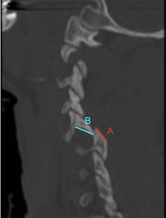

Adapted from: Foresthoefel C, Moore WD. Cervical Facet Dislocations and Fractures. Reference article, Orthobullets. (Accessed on December 20, 2025). https://www.orthobullets.com/spine/2064/cervical-facet-dislocations-and-fractures
1) Description of Measurement
Facet joint overlap (percent overlap method) is a quantitative CT-based assessment of cervical facet articulation used to identify facet fractures, subluxation, dislocation, and instability, particularly in the trauma setting.
The method expresses how much of the inferior articular facet of the superior vertebra remains overlapped with the superior articular facet of the inferior vertebra, normalized to the full anteroposterior length of the facet. Loss of overlap reflects posterior element disruption and correlates with mechanical instability and risk of neurologic injury.
2) Instructions to Measure
3) Normal vs. Pathologic Ranges
Key points:
4) Important References
Dvorak MF, Fisher CG, Fehlings MG, et al. The surgical approach to subaxial cervical spine injuries: an evidence-based algorithm based on the SLIC classification system. Spine (Phila Pa 1976). 2007 Nov 1;32(23):2620-9. doi: 10.1097/BRS.0b013e318158ce16.
Daffner RH, Sciulli RL, Rodriguez A, Protetch J. Imaging for evaluation of suspected cervical spine trauma: a 2-year analysis. Injury. 2006 Jul;37(7):652-8. doi: 10.1016/j.injury.2006.01.018.
Allen BL Jr, Ferguson RL, Lehmann TR, O'Brien RP. A mechanistic classification of closed, indirect fractures and dislocations of the lower cervical spine. Spine (Phila Pa 1976). 1982 Jan-Feb;7(1):1-27. doi: 10.1097/00007632-198200710-00001.
Harris JH Jr, Mirvis SE. The Radiology of Acute Cervical Spine Trauma. 3rd ed. Williams & Wilkins; 1996.
5) Other info....
Facet overlap is a direct structural measure of stability, unlike purely alignment-based metrics
Particularly useful for:
Should be interpreted alongside:
CT is the gold standard for bony facet evaluation; MRI complements this by assessing ligamentous and disc injury
Even with preserved overlap, associated ligamentous disruption may still confer instability—clinical correlation is essential